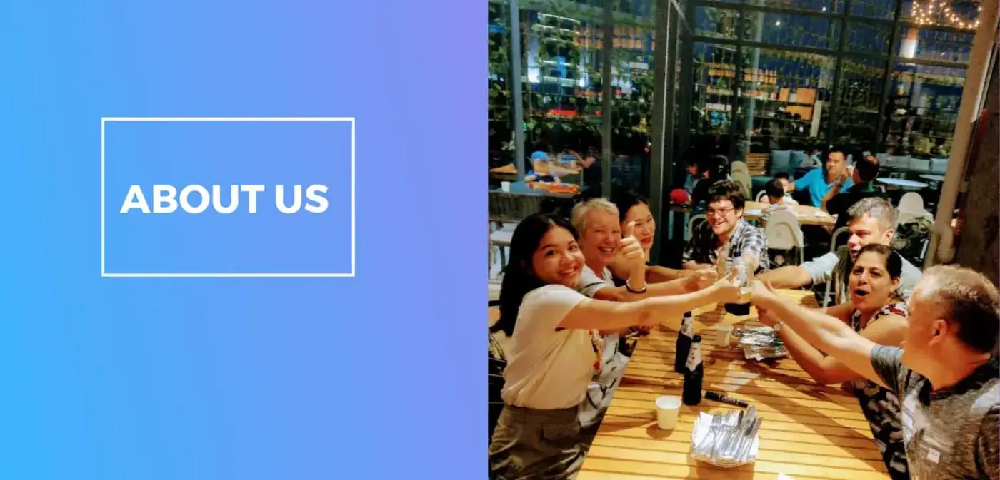
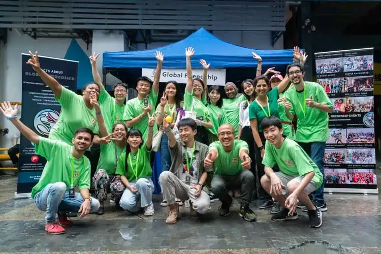
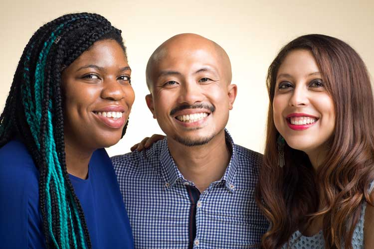
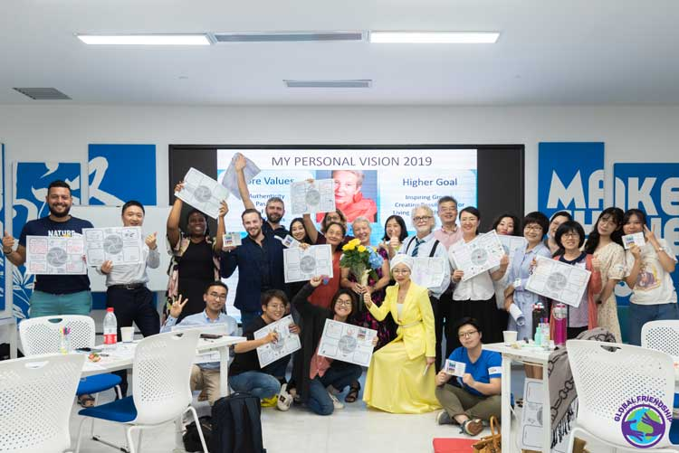
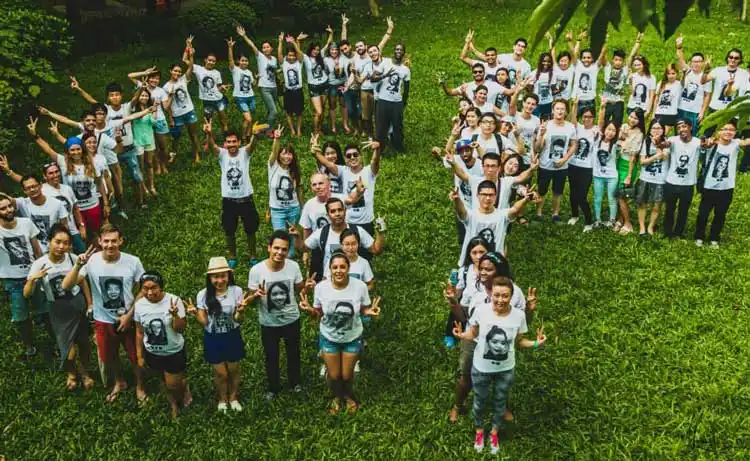

Our Organization
Global Friendship (GF) is one of the largest foreign communities in southern China, with over 10,000 followers across our social media platforms. Representing more than 100 nationalities, GF truly is a global network (based in China). Locals and expatriate members recognize GF as an integral part of their community, for the support provided in either personal or business development.
GF aims at building connections to help the community grow. This is done through our four pillars: social and cultural events, educational workshops (personal and professional development), community development opportunities, and our integrative services (support with housing, legal, visa, and much more).
Our Vision
Our vision is to build meaningful connections together.
Established in 2014, Global Friendship has always believed in the notion that when we are connected we can do more for our communities, and for our own development.
By establishing a strong foundation within communities, we believe space is created that allows individuals to not only benefit, but contribute to the further development of society.


Our Core Values
Diversity – We are diverse in the people we serve and hire, and the events we organize and offer.
Transparency – We act and conduct ourselves with honesty, within our team, to our members and partners.
Passion – We create, we connect and we do so whole heartily, recognizing passion motivates us to continue to aspire to our goals.
Core Qualities
Create – Producing meaningful events and workshops that inspire others to get involved and share their own skills and talents.
Care – Thinking of others and our communities, allows for greater opportunity to bring about change when others feel they are respected.
Unite – Connecting people and businesses together in a variety of events that allows for genuine openness to better get to know one another.

Our Story
Everyone knows TED, their slogan, ‘ideas worth spreading’, is exactly how GF begun. Summer 2014, in Guangzhou, China, Rochelle Mathurin and Fabiola Benitez finished watching the 2011 TED prize winner JR, share his talk entitled ‘Can art change the world?’. This TED not only left them in awe, it sparked their interest to take action, and celebrate something beautiful in their current city of Guangzhou, China.
Celebrating diversity within Guangzhou is what they wanted to showcase from this vibrant city. Meeting and sharing their message, giving talks and screening the TED was how they got both locals and foreigners to take their portraits (as encouraged by the TED talk). Upon completion of the art project, there were 250 black and white portraits taken. To read full details from the inside out project website click here: http://www.insideoutproject.net/en/group-actions/china-guangzhou?fbclid=IwAR1oF4lQvFCol0sCN0pZ1xkQw53tMPcemwnCzfDdknmZ_ndQFTizhDY9HzA.
As GF began grassroots, it has since evolved to become a platform to connect people, get support and enjoy cultural and social events. It was not until 2016, when Patrick Feng (local to Guangzhou) joined the team and was pivotal in transforming GF into what it is today!
The three have since worked towards the same shared vision of connecting people and building strong ties in the community for all to benefit.
To watch the TED talk that inspired Global Friendship click here. (TED URL: https://www.ted.com/talks/jr_s_ted_prize_wish_use_art_to_turn_the_world_inside_out?language=en#t-624495).
The Founders
Fabiola Benitez
“Why do I believe so much in GF? Because above all, I consider myself a Global Citizen. I believe in the idea that we are all humans seeking purpose and meaning in our lives. I believe that GF helps people get connected through meaningful events and services, and through a community, they can find others whom can inspire and motivate them to start living a more fulfilled life.”
Fabiola was born in Canada to immigrant parents from a small country in Latin America, El Salvador. She has always been fascinated by other cultures, languages, and people. Fabiola grew up in Ottawa, and graduated with a B.A. (Honours) in Criminology and Criminal Justice, with a concentration in Sociology, from Carleton University. Education and growth have always an important part for her life journey.
Before, arriving to China, Fabiola worked as a Child & Youth Counsellor for the Children’s Aid Society of Ottawa. She loved the experience she was getting but she knew that she had to step out of Canada to learn more about herself and the world.
She decided to take the plunge and try living and working in another country. She decided to go to China to experience work and travel life as an ESL teacher, but soon discovered that there was something more going on in China. There were many opportunities to explore and create new values for herself.
She was lucky to have her high school best friend with her and together started their own organization, Global Friendship. As the Co-founder of Global Friendship, she now works to strengthen the GF community by creating diverse and meaningful events and services. Connect with Fabiola directly by email: fabiola@globalfriendship.net
Patrick met Fabiola and Rochelle in 2016, then decided to operate Global Friendship with them together. He received her B.S from Guangdong University of Foreign Studies in 2004. After his 10-year career as a HR consultant and head hunter, he decided to start his own company Diizuu, providing local experience to foreign tourists in Guangzhou. Patrick is also Behavioral Psychology analyst and a diehard fan of Italian football team Juventus. Connect with Patrick directly by e-mail: Patrick@globalfriendship.net
Why I believe in GF:
“GF is not a company that we need to pull it up to the hill. Instead, it is GF which pushes us to move fast and improve every day. Behind GF, there are thousands of members and followers’ demands. So we are a cross-cultural community which is needed.”
Patrick Feng
Rochelle Mathurin
Working with homeless and at-risk youth in Ottawa, and needing a change due to burnout, brought Rochelle to the other side of the world, to experience ‘life in China. What was suppose to be only a 6-month break from Canada; has turned into 4 years, and still counting. It was Fabiola Benitez, her high school best friend that encouraged Rochelle to make the move to China.
Living in the lively and vibrant city of Guangzhou, rubbing elbows with traders and business owners from around the world, has helped spark Rochelle’s entrepreneurial spirit. Along with her best friend, the two Co-Founded the largest expat community in southern China.
Despite enjoying her life in China, Rochelle did leave after 1.5 years to pursue her Masters of Social Work at McGill University, upon completion, she returned to China to join Fabiola and continue the work started with GF. As a Masters of Social Work graduate, Rochelle continues to incorporate her studies with her life in China. Specifically, in the way she works to improve the community by connecting and empowering individuals that she meets. Rochelle has great appreciation for China, for her own personal and professional growth, as well as the connections she has made along the way. Connect with Rochelle directly by email: rochelle@globalfriendship.net
“Why I believe in Global Friendship is that it is an organization that started from the grassroots. From the beginning there was always a natural desire to think about the collective and bridge people together. Through Global Friendship we are able to share our interests and values and bring meaningful services, events and people through this community’.